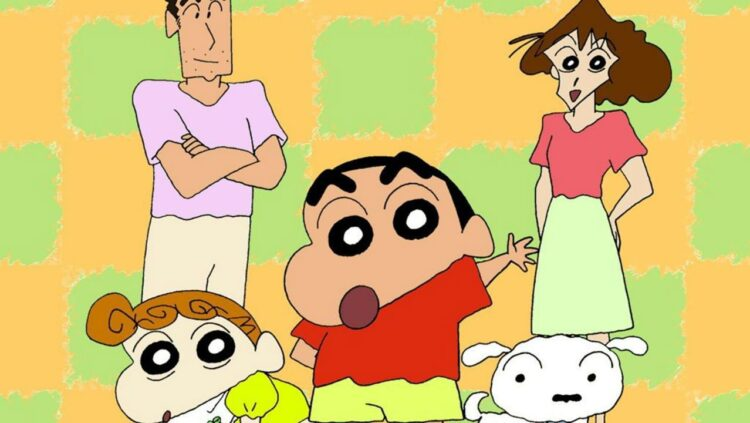
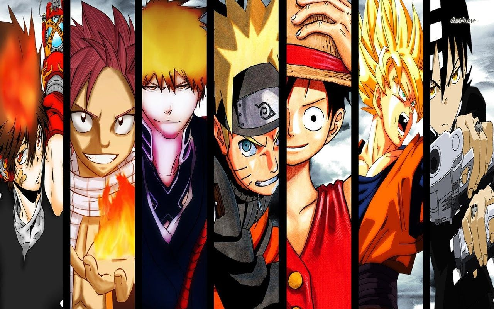
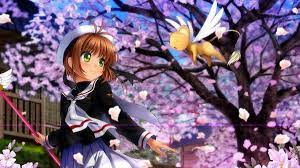
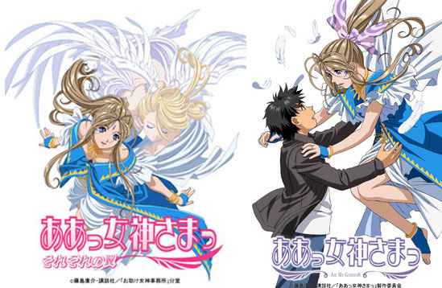

Generos del anime
Existen dos tipos para clasificar los géneros del anime, estos son el género demográfico y animes por temática o trama
Demográficos
Kodomo
Este es un género del anime enfocado hacia el público infantil, donde sus animaciones y tramas son más fantasiosas y sencillas

Shonen
Este género se enfoca más en un público masculino adolescente, se caracteriza porque suele tener combates o escenas más violentas.

Shojo
Este género va enfocado hacia un genero femenino adolescente, se caracteriza porque pueden tener romance, comedia y acción.

Seinen
Este es uno de los géneros del anime que se caracteriza porque va dirigido específicamente a un público más adulto o maduro, este género se caracteriza porque muestra escenas con mucha violencia, gore y hasta escenas sexuales

Josei
Este género se caracteriza porque va dirigido específicamente a un público más adulto o maduro este género abarca drama, romance, reencuentros de vida

Temáticos o estilos
Este género cataloga los animes por el tipo de tema que trata o el estilo de su trama.
Maho shojo
Este estilo de anime se diferencia porque el personaje principal ( tambien puede ser mas de 1) cuenta con poderes mágicos o místicos
im
| Genero del anime |
Cantidad de personas |
| Shonen |
45 |